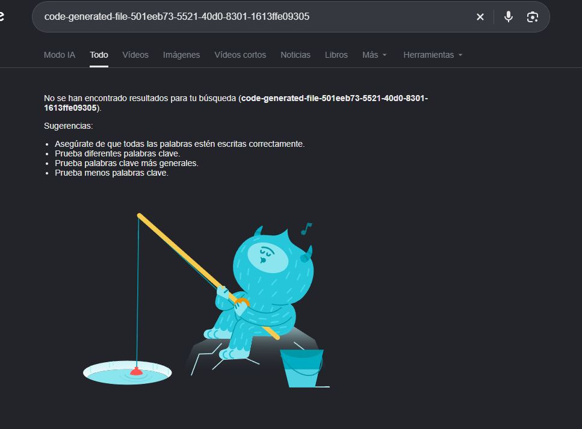

Materia civil
Encuentra una alternativa pacífica para resolver conflictos patrimoniales y civiles.
Conocer más →Resolvemos conflictos civiles y familiares de forma pacífica, sin ir a juicio.
Autorizado por el Ministerio de Justicia
R.D. N.° 364-2026-JUS/DGDPAJ/DCMA
Corporación de Abogados e Ingenieros por la Defensa de los Derechos Fundamentales
Te acompañamos a encontrar acuerdos en un espacio de respeto y escucha.
Encuentra una alternativa pacífica para resolver conflictos patrimoniales y civiles.
Conocer más →Construyamos acuerdos que prioricen el bienestar y la tranquilidad de tu familia.
Conocer más →Permítenos acompañarte en la búsqueda de un acuerdo.
Espacios de diálogo para construir soluciones duraderas.
Acuerdos para resolver diferencias de carácter patrimonial.
Diálogo para proteger el bienestar familiar.
Un proceso claro, cercano y centrado en el diálogo.
Cuéntanos brevemente tu caso.
Registramos tu solicitud y revisamos la información.
Se invita a las partes a participar.
Las partes dialogan con la asistencia de un conciliador.
El resultado se recoge en el acta correspondiente.
Duración estimada: desde 2 o 3 días; casi inmediato si ambas partes ya tienen un acuerdo.
Requisitos: DNI de ambas partes. Si solo una parte solicita, debe acudir al centro a presentar la solicitud.
Profesionales comprometidos con el diálogo y el respeto.

ABOGADO
El diálogo abre la puerta a nuevas posibilidades.
wsdekjihlefvbclisdhabvl
JhanpolEstamos aquí para orientarte en el primer paso.